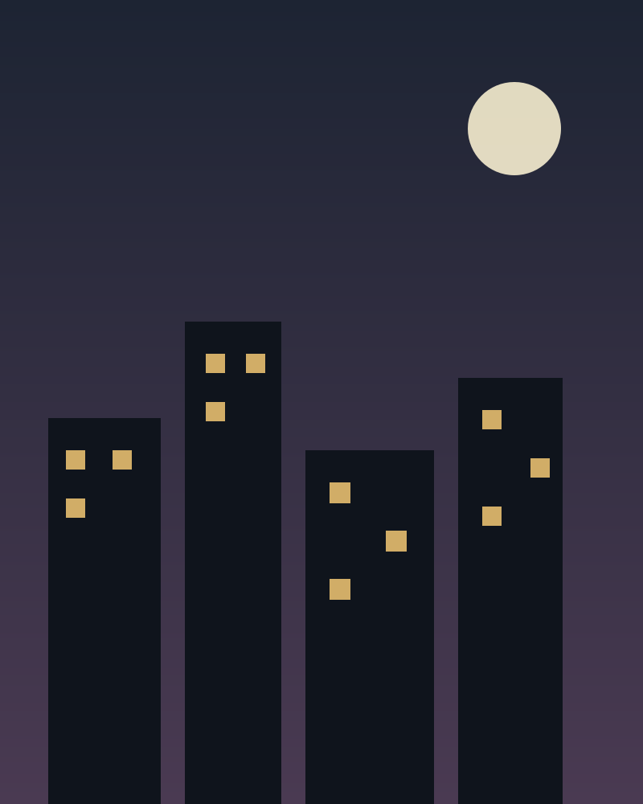

Kumpulan Foto
Album yang tidak pernah selesai.
Foto lama, foto baru, dan foto yang hanya ada dalam ingatan orang-orang yang pernah memegangnya. Semua dikumpulkan di sini, satu per satu.


Klik foto untuk melihat ukuran lebih besar. Gunakan panah kiri dan kanan saat pratinjau terbuka.
Kirim Foto
Album ini masih jauh dari lengkap.
Punya foto jepitan lama, foto wisuda, atau foto hajatan yang belum